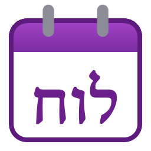
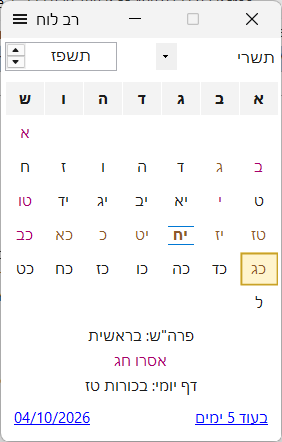
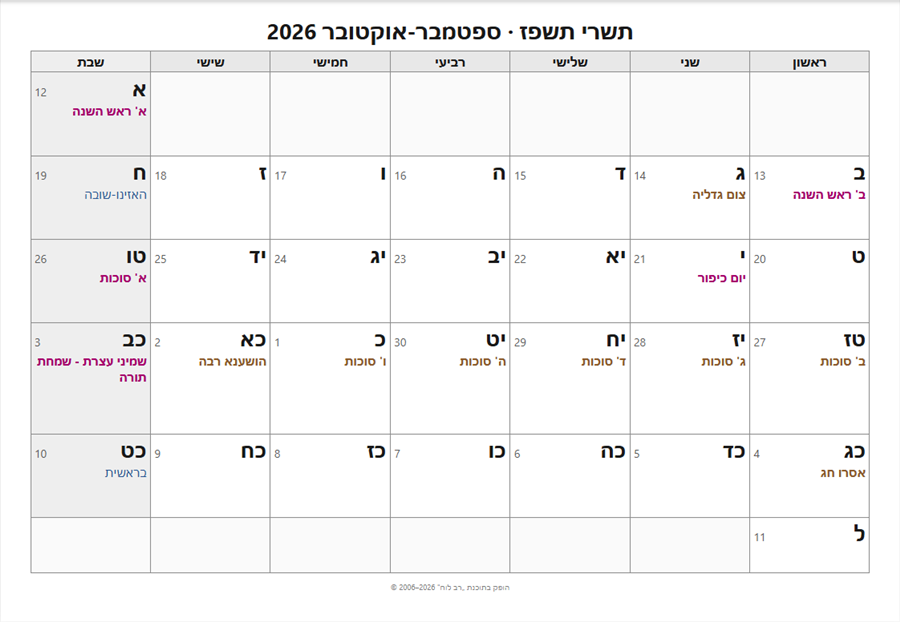

לוח שנה עברי ולועזי למחשב - חגים, זמני היום, ימי הולדת ויאהרצייט, והדפסת לוחות שנה מעוצבים.

חלון קטן ופשוט, שמאחוריו חישוב מדויק של הלוח העברי.
מעבר בין הלוחות בלחיצה, ניווט נוח במקלדת ובעכבר, ו"בעוד X ימים" לכל תאריך. אפשר לקבוע שהיום יתחלף בצאת הכוכבים.
לארץ ישראל או לחוץ לארץ (יום טוב שני של גלויות), כולל חגי מדינת ישראל למי שרוצה.
ארועים חוזרים לפי תאריך עברי או לועזי, עם מספר השנים. ל' חשוון/כסלו ואדר נקבעים לפי ההלכה, ומנהג אדר ליאהרצייט לבחירה.
רשימה מורחבת לפי ספריית KosherJava, ובה הנץ והשקיעה הנראים על בסיס לוחות "חי". מיקום נקבע בחיפוש כתובת.
לוח חודשי, לוח לכל חודשי השנה או לוח שנתי על דף A4 - עם טקסט, צבע ותמונה בימים שתבחרו.
יצוא הארועים לקובץ יומן, לגוגל, לאאוטלוק ולטלפון - כל יום הולדת עברי בתאריך הלועזי הנכון בכל שנה.
לפני זמני היום או אחריהם, ולפני ימי הולדת ויאהרצייט - בחלון תזכורת או בהודעת Windows, גם כשהלוח סגור.
דף יומי, ספירת העומר ותזכורת ל"משיב הרוח" ולשאילת גשמים; קביעות השנה, מולדות ותקופות.
מצב כהה לפי הגדרות Windows, ותצוגה חדה גם במסכים בהגדלה.
הלוח נפתח בדפדפן, מסודר על דפי A4 בדיוק כפי שיודפס.

מתקינים מעל הגרסה הקיימת - הארועים, המיקומים וההגדרות נשמרים.
כמה דקות לפני זמני היום או אחריהם - כמה תזכורות לכל זמן, עם טקסט וצליל משלהן.
בבוקר יום ההולדת או היאהרצייט, או כמה ימים לפניו - גם ביומן שמייצאים.
חלון תזכורת עם "הזכר שוב" וצליל לבחירה, סמל ליד השעון, והפעלה עם Windows.
צבע לטבלה ותבנית שורות או משבצות, ועריכת טקסט הארועים בלוח המיוצא.
התוכנה נכתבה מחדש. למי שהכיר את הגרסה הקודמת:
חישוב חדש ומדויק יותר, בחירת הזמנים המוצגים, הנץ הנראה, ויצוא זמני החודש.
חיפוש מיקום לפי כתובת, עם מילוי אוטומטי של גובה ואזור זמן.
חיפוש, סינון ומיון, "המועד הבא", וכללים הלכתיים מדויקים לתאריכים שאינם קיימים בכל שנה.
לדף להדפסה במקום לוורד - עם עריכה, תמונות ושמירה כ-PDF, בלי צורך ב-Word.
במקום החיבור לאאוטלוק: "הוסף ליומן" ויצוא הארועים לכל יומן, גם בטלפון.
דף יומי, ספירת העומר ותזכורות טל ומטר. תקופות. תמיכה במסכים מודרניים ובמצב כהה.
כן - רב לוח חינם לשימוש אישי בלבד. אין לעשות בו שימוש מסחרי, כגון הדפסת לוחות שנה או לוחות זמנים למכירה, לחלוקה ללקוחות או לפרסום, בלי אישור מראש. לבקשת רישיון מסחרי: elischein@gmail.com. תנאי הרישיון המלאים מוצגים בהתקנה.
לא. הגרסה החדשה דורשת Windows 10 או 11 במחשב 64 ביט.
לירושלים הנתונים כלולים בתוכנה. למיקומים אחרים מורידים אותם מלוחות "חי" בחלון המיקומים (דורש חיבור לאינטרנט).
מורידים ומתקינים מעל הקיימת. הארועים, המיקומים וההגדרות נשמרים.